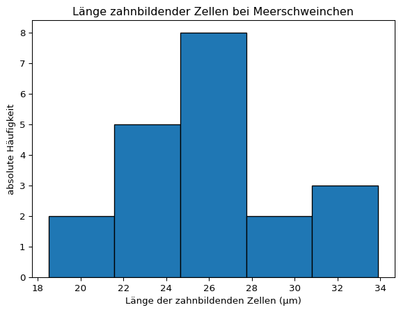
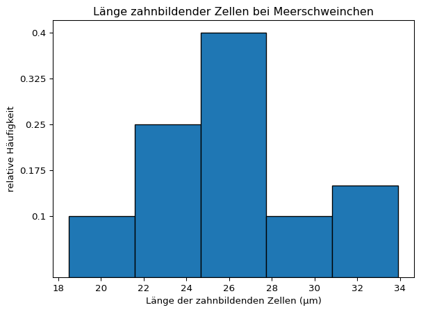
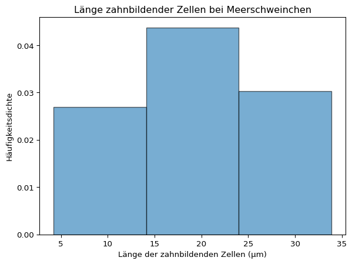
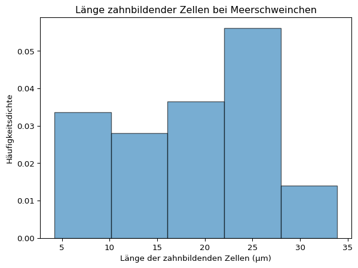
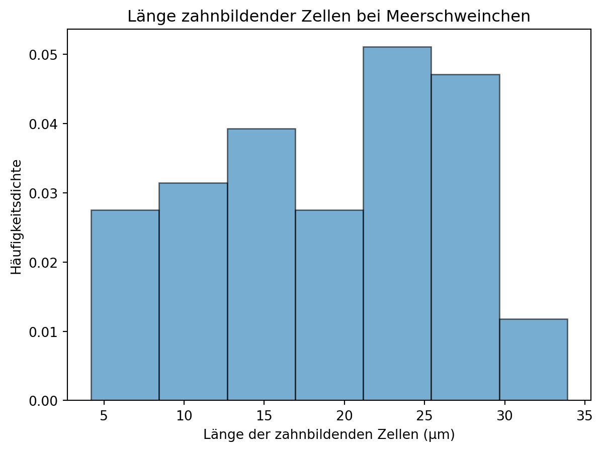
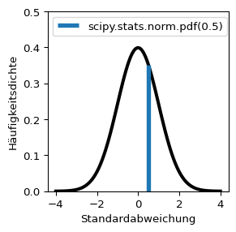
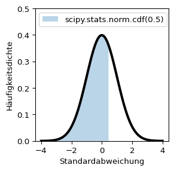
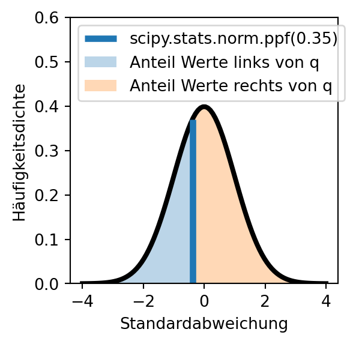
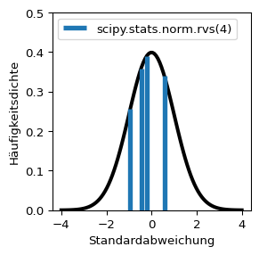

Mit zunehmender Stichprobengröße wird eine immer bessere Schätzung des Erwartungswerts erreicht. Mathematisch liegt dieser Beobachtung der zentrale Grenzwertsatz zugrunde. So werden beim Würfeln mit mehreren Würfeln weit vom Erwartungswert entfernte Wurfergebnisse immer unwahrscheinlicher. Dies lässt sich bereits mit wenigen Würfeln zeigen (siehe Beispiel).
Beispiel 2.1: Häufigkeitsverteilung von Würfelergebnissen
Für einen Würfel gibt es 6 mögliche Ergebnisse, für 2 Würfel 6 * 6 mögliche Kombinationen, für 3 Würfel 6 * 6 * 6 Kombinationen und so weiter. Weil viele Kombinationen wertgleich sind, kommen Wurfergebnisse in der Nähe des Erwartungswerts häufiger vor als beispielsweise ein Einserpasch.
Die mit steigender Stichprobengröße zu beobachtende Annäherung von Messwerten an einen in der Grundgesamtheit geltenden Erwartungswert gilt auch, wenn der Erwartungswert und die Varianz in der Grundgesamtheit unbekannt sind. Mit zunehmender Stichprobengröße nähern sich die Messwerte der Normalverteilung an, die nach ihrem Entdecker Carl Friedrich Gauß auch als Gaußsche Glockenkurve bekannt ist.
Die für größere Stichproben zu beobachtende Annäherung der Verteilung von Messwerten an die Normalverteilung kann anhand des Gewichts von Pinguinen aus dem Datensatz palmerpenguins gezeigt werden.
palmerpenguins
Pinguine des Palmer-Station-Datensatzes
Meet the Palmer penguins von @allison_horst steht unter der Lizenz CC0-1.0 und ist auf GitHub abrufbar. 2020
Der Datensatz steht unter der Lizenz CCO und ist in R sowie auf GitHub verfügbar. 2020
# R Befehle, um den Datensatz zu laden
install.packages("palmerpenguins")
library(palmerpenguins)
Horst AM, Hill AP und Gorman KB. 2020. palmerpenguins: Palmer Archipelago (Antarctica) penguin data. R package version 0.1.0. https://allisonhorst.github.io/palmerpenguins/. doi: 10.5281/zenodo.3960218.
species
Adelie 146
Chinstrap 68
Gentoo 119
dtype: int64
Unter anderen wurde das Körpergewicht in Gramm gemessen, das in der Spalte ‘body_mass_g’ eingetragen ist. Die Gewichtsverteilung der drei Spezies wird jeweils mit einem Histogramm dargestellt. Außerdem werden für jede Spezies der Stichprobenmittelwert und die Stichprobenstandardabweichung bestimmt. Mit diesen Werten kann eine Normalverteilungskurve berechnet und in das Histogramm eingezeichnet werden (wie das geht, wird in Beispiel 2.3 gezeigt). So kann optisch geprüft werden, ob die empirische Verteilung der Werte in der Stichprobe einer Normalverteilung mit den selben Werten für Mittelwert und Standardabspreichung entspricht.
Die Normalverteilung ist eine Dichtekurve, an die sich der Verlauf eines Histogramms mit einer gegen unendlich gehenden Anzahl von Messwerten und einer gegen Null gehenden Klassenbreite annähert.
Definition 2.1: Histogramm
Das Histogramm ist eine grafische Darstellung der Häufigkeitsverteilung kardinal skalierter Merkmale. Die Daten werden in Klassen, die eine konstante oder variable Breite haben können, eingeteilt. Es werden direkt nebeneinanderliegende Rechtecke von der Breite der jeweiligen Klasse gezeichnet, deren Flächeninhalte die (relativen oder absoluten) Klassenhäufigkeiten darstellen. Die Höhe jedes Rechtecks stellt dann die (relative oder absolute) Häufigkeitsdichte dar, also die (relative oder absolute) Häufigkeit dividiert durch die Breite der entsprechenden Klasse.
Beispiel 2.2: Histogramm berechnen und visualisieren
Als Beispiel wird die Länge der zahnbildenden Zellen der Meerschweinchen verwendet, die eine Vitamin-C-Dosis von 2 erhielten.
Die Funktion np.histogram() gibt an erster Stelle ein array mit den absoluten Häufigkeiten bzw. der Häufigkeitsdichte jeder Klasse zurück. An zweiter Stelle wird ein array mit den x-Positionen der Klassenrechtecke zurückgegeben - dabei wird für jede Klasse die Position der linken Seite sowie für die letzte Klasse zusätzlich die Position der rechten Seite des Rechtecks ausgegeben. Für 5 Klassen werden also 6 Positionswerte ausgegeben.
Die Klassenbreite kann zum Beispiel mit der Methode np.diff() ausgegeben werden.
Ein Histogramm kann mit der Funktion plt.hist(x, bins = None, *, range = None, density = False) aufgerufen werden, welche intern np.histogram() für die Berechnungen aufruft. Die Parameter der Funktion entsprechenen denen der NumPy-Funktion, wobei mit dem Argument x die darzustellenden Daten übergeben werden. Zusätzlich können verschiedene Grafikparameter übergeben werden.
Die Funktion hat 3 Rückgabewerte: die absolute Häufigkeit der Klassen (bzw. wenn density = True die Häufigkeitsdichte), die x-Position der Rechtecke.
plt.hist(dose2, bins =5, edgecolor ='black')plt.title('Länge zahnbildender Zellen bei Meerschweinchen')# Achsenbeschriftungplt.xlabel('Länge der zahnbildenden Zellen (μm)')plt.ylabel('absolute Häufigkeit')plt.show()

Eine Darstellung der relativen Häufigkeiten ist nicht direkt möglich.
hist_dichte, bins, ignore = plt.hist(dose2, bins =5, density =True, edgecolor ='black')plt.title('Länge zahnbildender Zellen bei Meerschweinchen')# relative Häufigkeit berechnenklassenbreite = np.diff(bins)[0]hist_relativ = hist_dichte * klassenbreite# yticks erzeugen an der Position von min(hist_dichte) bis max(hist_dichte)# aber mit Werten von hist_relativplt.yticks(ticks = np.linspace(min(hist_dichte), max(hist_dichte), len(hist_relativ)),labels = np.linspace(hist_relativ.round(2).min(), hist_relativ.round(2).max(), len(hist_relativ)).round(3));# Achsenbeschriftungplt.xlabel('Länge der zahnbildenden Zellen (μm)')plt.ylabel('relative Häufigkeit')plt.show()

plt.hist(dose2, bins =5, density =True, edgecolor ='black')plt.title('Länge zahnbildender Zellen bei Meerschweinchen')# Achsenbeschriftungplt.xlabel('Länge der zahnbildenden Zellen (μm)')plt.ylabel('Häufigkeitsdichte')plt.show()
Histogramme sind nicht immer gut geeignet, um die Verteilung einer Stichprobe zu charakterisieren. Der visuelle Eindruck hängt von der gewählten Klassenzahl ab - ein Beispiel:
plt.hist(meerschweinchen['len'], bins =3, density =True, edgecolor ='black', alpha =0.6);plt.title('Länge zahnbildender Zellen bei Meerschweinchen')# Achsenbeschriftungplt.xlabel('Länge der zahnbildenden Zellen (μm)')plt.ylabel('Häufigkeitsdichte')plt.show()

plt.hist(meerschweinchen['len'], bins =5, density =True, edgecolor ='black', alpha =0.6);plt.title('Länge zahnbildender Zellen bei Meerschweinchen')# Achsenbeschriftungplt.xlabel('Länge der zahnbildenden Zellen (μm)')plt.ylabel('Häufigkeitsdichte')plt.show()

plt.hist(meerschweinchen['len'], bins =7, density =True, edgecolor ='black', alpha =0.6);plt.title('Länge zahnbildender Zellen bei Meerschweinchen')# Achsenbeschriftungplt.xlabel('Länge der zahnbildenden Zellen (μm)')plt.ylabel('Häufigkeitsdichte')plt.show()

Die Dichtefunktion der Normalverteilung beschreibt, welcher Anteil der Werte innerhalb eines bestimmten Wertebereichs liegt. Bei der Berechnung der relativen Häufigkeiten in Beispiel 2.2 haben wir gesehen, dass die Summe der relativen Häufigkeiten 1 ist. Dies entspricht der Fläche unterhalb der Dichtekurve.
Die Dichtefunktion der Normalverteilung ist definiert als:
Die Form der Normalverteilung ergibt sich aus dem Faktor \(e^{-\frac{1}{2}\left(\frac{x-\mu}{\sigma}\right)^2}\) der Funktionsgleichung. Das Maximum der Funktion liegt am Punkt \(x = \mu\). Von dort fällt sie symmetrisch ab und nähert sich der x-Achse an. Der Abfall der Funktion erfolgt umso schneller, je kleiner \(\sigma\) ist. Die Wendepunkte der Kurve liegen jeweils eine Standardabweichung vom Mittelwert entfernt.
Eine Normalverteilung mit dem Mittelwert \(\mu = 0\) und einer Standardabweichung \(\sigma = 1\) heißt Standardnormalverteilung.
2.1 Normalverteilung anpassen
Um die Verteilung in einem Datensatz durch eine Normalverteilung anzunähern, werden dessen Mittelwert und Standardabweichung in die Funktionsgleichung der Normalverteilung eingesetzt. Mit Python können die Berechnungen direkt vorgenommen werden. In der Handhabung einfacher sind die vom Paket SciPy bereitgestellten Funktionen, die im nächsten Abschnitt ausführlicher vorgestellt werden. Das folgende Beispiel zeigt die Berechnung und Visualisierung mit Python und mit SciPy.
Beispiel 2.3: Dichtekurven berechnen und darstellen
Betrachten wir die Verteilungskennwerte der Gruppe der Meerschweinchen, die eine Dosis von 2 Milligramm Vitamin C erhielten.
Die Verteilung der Länge zahnbildender Zellen bei Meerschweinchen, die eine Dosis von 2 Milligramm Vitamin C erhielten, könnte einer Normalverteilung entsprechen. Aufgrund der geringen Stichprobengröße ist dies aber schwer zu beurteilen.
Quelle: Skript MB S. 51-54
2.2 Das Paket SciPy
Funktionen zur Berechnung von Dichtekurven können über Paket SciPy importiert werden. Das Modul stats (statistical functions) umfasst zahlreiche Funktionen zum Testen von Hypothesen. Funktionen für die Normalverteilung werden wie folgt aufgerufen:
import scipyprint("Häufigkeitsdichte der Normalverteilung bei x = 0:", scipy.stats.norm.pdf(0), "\n")
Häufigkeitsdichte der Normalverteilung bei x = 0: 0.3989422804014327
Für die Normalverteilung sind vier Funktionen relevant:

Beschreibung
Die Funktion scipy.stats.norm.pdf(x) berechnet die Dichte der Normalverteilung am Punkt x (PDF = probability density function). x kann auch ein array sein - so wurde die linksstehende Kurve mit dem Befehl scipy.stats.norm.pdf(np.linspace(-4, 4, 100)) berechnet.

Beschreibung
Die Funktion scipy.stats.norm.cdf(x) berechnet den Anteil der Werte links von x (CDF = cumulative density function).

Beschreibung
Die Funktion scipy.stats.norm.ppf(q) ist die Quantilfunktion der Normalverteilung und die Umkehrfunktion der kumulativen Häufigkeitsdichtefunktion (CDF). Die Funktion berechnet für \(0 \le q \le 1\) den Wert x, links von dem der Anteil q aller Werte liegt und rechts von dem der Anteil 1-q liegt (PPF = percentile point function).

Beschreibung
Die Funktion scipy.stats.norm.rvs(size) zieht size Zufallszahlen aus der Normalverteilung. Hinweis: Die Zufallszahlen werden im Skript dynamisch gezogen.
Mit den Parametern loc = mittelwert und scale = standardabweichung kann die Form der Normalverteilung angepasst werden. Standardmäßig wird die Standardnormalverteilung mit loc = 0 und scale = 1 berechnet. Die Parameter der Funktionen können Einzelwerte (Skalare) oder auch Arrays bzw. Listen sein.
2.3 Aufgaben Normalverteilung
Möglicherweise haben Sie schon einmal von Mensa International gehört, einer Vereinigung für Hochbegabte. Wer Mitglied in dieser Vereinigung werden möchte, soll einen höheren Intelligenzquotienten (IQ) haben als 98 % der Bevölkerung seines:ihres Herkunftslandes (Wikipedia).
Wenn der durchschnittliche IQ 100 und die Standardabweichung 15 beträgt, welchen IQ müssten Sie haben, um bei Mensa International aufgenommen zu werden?
Mensa International ist nicht die einzige Organisation ihrer Art, andere Organisationen haben sogar noch strengere Kriterien. Welcher IQ wird benötigt, um hier Mitglied zu werden?
Intertel (Kriterium: IQ aus dem höchsten 1 %)
Triple Nine Society (Kriterium: IQ aus dem höchsten 0,1 %)
Prometheus Society (Kriterium: IQ aus dem höchsten 0,003 %)
Der IQ ist nicht mit angeborener Intelligenz gleichzusetzen und auch abhängig davon, wie viel Gelegenheit man zum Gehirntraining hatte, etwa durch den Schulbesuch. Der niedrigste durchschnittliche IQ wurde mit 71 im Land Niger gemessen. Angenommen Sie hätten einen IQ von 100. Würden Sie in Niger das Kriterium der Mensa International erfüllen?
print(scipy.stats.norm.cdf(loc =71, scale =15, x =100))
0.9734024259789904
Übrigens: Wie der Spiegel berichtet, schneiden Studierende mit mittelmäßigem Intelligenzquotienten ebenso erfolgreich ab wie Hochbegabte, vorausgesetzt sie sind neugierig genug und arbeiten gewissenhaft.
2.4 Konfidenzintervalle
Die Grundidee in der Statistik ist, dass von Stichprobenwerten auf den tatsächlichen Wert in der Grundgesamtheit geschlossen werden kann. Die Überlegung ist wie folgt:
Wenn eine Stichprobe aus einer Grundgesamtheit gezogen wird, dann streuen die Stichprobenwerte normalverteilt um den Mittelwert der Grundgesamtheit. Bei einer Normalverteilung liegen
68,27 % aller Werte im Intervall \(\pm 1 ~ s\),
95,45 % aller Werte im Intervall \(\pm 2 ~ s\) und
99,73 % aller Werte im Intervall \(\pm 3 ~ s\).
Mit der gleichen Wahrscheinlichkeitsverteilung liegt der unbekannte Mittelwert der Grundgesamtheit um einen zufälligen Wert aus der Stichprobe.
Der Erwartungswert kann mit einer gewissen Wahrscheinlichkeit aus dem Standardfehler des Mittelwerts einer Stichprobe geschätzt werden. Man wählt dazu ein Konfidenzniveau, also eine Vertrauenswahrscheinlichkeit, dass der Erwartungswert tatsächlich im Bereich der Schätzung liegt. Der umgekehrte Fall, dass der Erwartungswert nicht im Bereich der Schätzung liegt, wird Signifikanz- oder Alphaniveau genannt und mit dem griechischen Buchstaben \(\alpha\) (alpha) gekennzeichnet. \(\alpha\) liegt im Bereich 0 - 1, das Konfidenzniveau ist \(1 - \alpha\) (siehe: Fehler 1. und 2. Art).
der Erwartungswert liegt in 68,27 % aller Fälle im Intervall \(\pm 1 ~ \frac{s}{\sqrt{n}}\),
der Erwartungswert liegt in 95,45 % aller Fälle im Intervall \(\pm 2 ~ \frac{s}{\sqrt{n}}\) und
der Erwartungswert liegt in 99,73 % aller Fälle im Intervall \(\pm 3 ~ \frac{s}{\sqrt{n}}\).
Häufig wird das Alphaniveau \(\alpha = 0.05\) bzw. das Konfidenzintervall 95 % gewählt, was \(\pm 1.96 ~ \frac{s}{\sqrt{n}}\) entspricht. Dies gilt aber nur für große Stichproben. Für kleine Stichprobengrößen folgen die Stichprobenmittelwerte der t-Verteilung, die im nächsten Abschnitt vorgestellt wird.
hier könnte / müsste man noch einseitige und zweiseitige Hypothesentests und den Begriff “Alpha-Halbe” einführen. Das ließe sich auch gut grafisch mit nur nach rechts gehenden und beidseitigen Pfeilen darstellen.
Im folgenden Beispiel wird die Idee, dass mit einer gewissen Wahrscheinlichkeit vom Stichprobenmittelwert auf den Mittelwert der Grundgesamtheit (Erwartungswert) geschlossen werden kann, noch einmal grafisch dargestellt.
Ein Stichprobenmittelwert streut inform einer Normalverteilungskurve mit sigma = stichprobenfehler. Diese Dichtekurve ist erheblich schmaler und höher als die Normalverteilungskurve eines einzelnen Messwerts. Dies liegt an der geringen Standardabweichung in der Stichprobe von ~ 0.2, was die Kurve staucht.
Code für das Panel Stichprobe N = 12
import numpy as npimport matplotlib.pyplot as pltimport scipy# Parameter der Standardnormalverteilungmu, sigma =0, 1# Mittelwert und Standardabweichung# Daten generierenseed =4np.random.seed(seed = seed)data = np.random.default_rng().normal(mu, sigma, 1000)# Grafikplt.figure(figsize = (8.5, 6))# Histogramm plottenarray, bins, patches = plt.hist(data, bins =30, density =True, alpha =0.6, color ='lightgoldenrodyellow', edgecolor='black')# Mittelwert einzeichnenmean_line = plt.axvline(mu, color ='steelblue', linestyle ='solid', linewidth =3)# positive und negative Standardabweichungen einzeichnenpos_std_lines = [plt.axvline(mu + i * sigma, color ='steelblue', linestyle ='dotted', linewidth =2) for i inrange(1, 4)]neg_std_lines = [plt.axvline(mu - i * sigma, color ='steelblue', linestyle ='dotted', linewidth =2) for i inrange(1, 4)]# Normalverteilungskurvex_values = np.linspace(min(bins), max(bins), 100)y_values =1/ (sigma * np.sqrt(2* np.pi)) * np.exp(- (x_values - mu) **2/ (2* sigma **2))normal_dist_curve = plt.plot(x_values, y_values, color ='steelblue', linestyle ='solid', linewidth =2)# StichprobeN =12np.random.seed(seed =4)stichprobe = np.random.default_rng().normal(mu, sigma, N)stichprobenstandardabweichung = stichprobe.std(ddof =1)stichprobenmittelwert = stichprobe.mean()standardfehler = stichprobenstandardabweichung / np.sqrt(len(stichprobe))# Histogramm berechnen# hist, bins = np.histogram(stichprobe, bins = 30, density = True)# Standardfehlerkurve Stichprobe# x_values = np.linspace(min(bins), max(bins), 100)x = np.linspace(stichprobenmittelwert -4* stichprobenstandardabweichung, stichprobenmittelwert +4* stichprobenstandardabweichung, 100)y_values = scipy.stats.t.pdf(x = x_values, df = N -1, loc = stichprobenmittelwert, scale = standardfehler) # t-Verteilung# Stichprobenmittelwert einzeichnenmean_stichprobe = plt.axvline(stichprobenmittelwert, color ='black', linestyle ='solid', linewidth =2)# Verteilungskurve einzeichnenstichprobe_dist_curve = plt.plot(x_values, y_values, color ='black', linestyle ='solid', linewidth =2)# Legendeplt.legend([normal_dist_curve[0], mean_line, neg_std_lines[0], mean_stichprobe, stichprobe_dist_curve[0]], ['Standardnormalverteilung', 'Mittelwert', 'Standardabweichung', 'Stichprobenmittelwert', 't-Verteilung'], loc='upper right', handlelength =3)plt.title('Standardnormalverteilung')plt.xlabel('Standardabweichung')plt.ylabel('Häufigkeitsdichte')plt.show()
2.5 Die t-Verteilung
Die t-Verteilung wurde von William Sealy Gosset entdeckt (wenngleich nicht als erstem) und popularisiert. Die Verteilung ist auch als Student’sche Verteilung bekannt: Da Gossets Arbeitgeber, die Guiness-Brauerei, die Veröffentlichung der Entdeckung nicht gestattete, publizierte Gosset unter dem Synonym Student. (Wikipedia)
Die t-Verteilung beschreibt die Verteilung von Stichprobenmittelwerten mit unbekannter Varianz in der Grundgesamtheit, deren Standardfehler mit der Stichprobenstandardabweichung geschätzt wird. Die t-Verteilung hat gegenüber der Normalverteilung die Anzahl der Freiheitsgrade als zusätzlichen Parameter
Definition 2.2: Anzahl Freiheitsgrade
“Die Anzahl unabhängiger Information, die in die Schätzung eines Parameters einfließen, wird als Anzahl der Freiheitsgrade bezeichnet. Im Allgemeinen sind die Freiheitsgrade einer Schätzung eines Parameters gleich der Anzahl unabhängiger Einzelinformationen, die in die Schätzung einfließen, abzüglich der Anzahl der zu schätzenden Parameter, die als Zwischenschritte bei der Schätzung des Parameters selbst verwendet werden. Beispielsweise fließen \(n\) Werte in die Berechnung der Stichprobenvarianz ein. Dennoch lautet die Anzahl der Freiheitsgrade \(n − 1\), da als Zwischenschritt der Mittelwert geschätzt wird und somit ein Freiheitsgrad verloren geht.”
Anzahl der Freiheitsgrade (Statistik). von verschiedenen Autor:innen steht unter der Lizenz CC BY-SA 4.0 ist abrufbar auf Wikipedia. 2025
Die allgemeine Häufigkeitsdichtefunktion der t-Verteilung lautet:
\(\Gamma\) ist die Gammafunktion, die für ganzzahlige Argumente \(n\) den Wert \(\Gamma(n) = (n-1)!\) hat.
Da für die Berechnung des Stichprobenmittelwerts die Anzahl der Freiheitsgrade \(n - 1\) ist, kann auch geschrieben werden: \[
f(x) = \frac{\Gamma\left(\frac{n}{2}\right)}{\sqrt{(n-1) \pi} , \Gamma\left(\frac{n-1}{2}\right)} \left(1 + \frac{x^2}{n-1}\right)^{-\frac{n}{2}}
\]
\(n\) ist die Stichprobengröße.
Das Modul scipy.stats stellt Funktionen zur Berechnung der t-Verteilung bereit.
scipy.stats.t.pdf(x, df, loc=0, scale=1) berechnet die Häufigkeitsdichte für die Werte x für eine t-Verteilung mit df Freiheitsgraden, Mittelwert loc und Standardabweichung scale (PDF = probability density function).
scipy.stats.t.cdf(x, df, loc=0, scale=1) berechnet den Anteil der Werte links von x (CDF = cumulative density function).
scipy.stats.t.ppf(q, df, loc=0, scale=1) ist die Quantilfunktion der t-Verteilung (PPF = percentile point function).
scipy.stats.t.rvs(df, loc=0, scale=1, size=1) zieht size Zufallzahlen aus der t-Verteilung.
Die Parameter der Funktionen können Einzelwerte (Skalare) oder auch Arrays bzw. Listen sein.
Mit zunehmender Stichprobengröße nähert sich die t-Verteilung der Normalverteilung an. Als Faustformel gilt \(n > 30\). Untenstehende Grafik zeigt die Annäherung der t-Verteilung an die Normalverteilung.
year =2008sex ='female'species ='Adelie'fig, (ax1, ax2, ax3) = plt.subplots(1, 3, figsize = (7.5, 6), sharey =True, layout ='tight')plt.suptitle('Gewichtsverteilung von weiblichen Pinguinen im Jahr 2008')# Adeliedata = penguins['body_mass_g'][(penguins['species'] == species) & (penguins['sex'] == sex) & (penguins['year'] == year)]stichprobengröße = data.size## Histogrammax1.hist(data, alpha =0.6, edgecolor ='lightgrey', color ='C0', density =True)ax1.set_xlabel('Gewicht in Gramm')ax1.set_ylabel('Häufigkeitsdichte')ax1.set_title(label =str(species) +" N = "+str(stichprobengröße))## t-Verteilung des Stichprobenmittelwertsstichprobenmittelwert = data.mean()stichprobenstandardabweichung = data.std(ddof =1)standardfehler = stichprobenstandardabweichung / np.sqrt(stichprobengröße)hist, bin_edges = np.histogram(data)x_values = np.linspace(min(bin_edges), max(bin_edges), 100)y_values = scipy.stats.t.pdf(x_values, loc = stichprobenmittelwert, scale = standardfehler, df = stichprobengröße -1)ax1.plot(x_values, y_values, color ='black', linewidth =1, label ='t-Verteilung')ax1.legend(loc ='upper left')# Chinstrapspecies ='Chinstrap'data = penguins['body_mass_g'][(penguins['species'] == species) & (penguins['sex'] == sex) & (penguins['year'] == year)]stichprobengröße = data.size## Histogrammax2.hist(data, alpha =0.6, edgecolor ='lightgrey', color ='C1', density =True)ax2.set_xlabel('Gewicht in Gramm')ax2.set_title(label =str(species) +" N = "+str(stichprobengröße))## t-Verteilung des Stichprobenmittelwertsstichprobenmittelwert = data.mean()stichprobenstandardabweichung = data.std(ddof =1)standardfehler = stichprobenstandardabweichung / np.sqrt(stichprobengröße)hist, bin_edges = np.histogram(data)x_values = np.linspace(min(bin_edges), max(bin_edges), 100)y_values = scipy.stats.t.pdf(x_values, loc = stichprobenmittelwert, scale = standardfehler, df = stichprobengröße -1)ax2.plot(x_values, y_values, color ='black', linewidth =1)# Gentoospecies ='Gentoo'data = penguins['body_mass_g'][(penguins['species'] == species) & (penguins['sex'] == sex) & (penguins['year'] == year)]stichprobengröße = data.size## Histogrammax3.hist(data, alpha =0.6, edgecolor ='lightgrey', color ='C2', density =True)ax3.set_xlabel('Gewicht in Gramm')ax3.set_title(label =str(species) +" N = "+str(stichprobengröße))## t-Verteilung des Stichprobenmittelwertsstichprobenmittelwert = data.mean()stichprobenstandardabweichung = data.std(ddof =1)standardfehler = stichprobenstandardabweichung / np.sqrt(stichprobengröße)hist, bin_edges = np.histogram(data)x_values = np.linspace(min(bin_edges), max(bin_edges), 100)y_values = scipy.stats.t.pdf(x_values, loc = stichprobenmittelwert, scale = standardfehler, df = stichprobengröße -1)ax3.plot(x_values, y_values, color ='black', linewidth =1)plt.show()
2.6 Aufgabe Konfidenzintervalle
Schätzen Sie das Gewicht für im Jahr 2008 beobachtete weibliche Pinguine der Spezies Adelie, Chinstrap und Gentoo.
Welches Konfidenzintervall können Sie für die Mittelwerte angeben, wenn eine Vertrauenswahrscheinlichkeit von 90 % gelten soll?
Tipp 2.1: Tipp und Musterlösung
Folgende Schritte helfen Ihnen bei der Lösung:
Bestimmen Sie den Stichprobenmittelwert \(\bar{x}\).
Bestimmen Sie die Stichprobenstandardabweichung \(s\), die Stichprobengröße \(N\) und den Standardfehler \(\frac{s}{\sqrt{N}}\).
Bestimmen Sie die z- oder t-Werte der Normal- bzw. t-Verteilung für das gewählte Konfidenzniveau - für einen zweiseitigen Hypothesentest \(\frac{\alpha}{2}\) und \(1 - \frac{\alpha}{2}\)
Berechnen Sie das Konfidenzintervall \(\bar{x} \pm t_{\alpha / 2} ~ \frac{s}{\sqrt{n}}\).

![Dargestellt ist ein Histgramm mit 30 Klassen. Auf der x-Achse sind die Einheiten der Standardabweichung von -3 bis +3 abgetragen, auf der y-Achse die Häufigkeitsdichte. Zusätzlich sind der Stichprobenmittelwert 0 durch einer vertikale Linie und die ganzzahligen Einheiten der Standardabweichugn durch gestrichelte vertikale Linien eingezeichnet. Über dem Histogramm liegt die Kurve der Standardnormalverteilung. Mit horizontalen Pfeilen sind die Entfernungen zwischen den Standardabweichungen plus/minus 1, 2 und 3 markiert und der Anteil der dazwischen liegenden Werte annotiert (68,27 %, 95,45 %, 99,73 %).](normalverteilung_files/figure-html/cell-30-output-1.png)